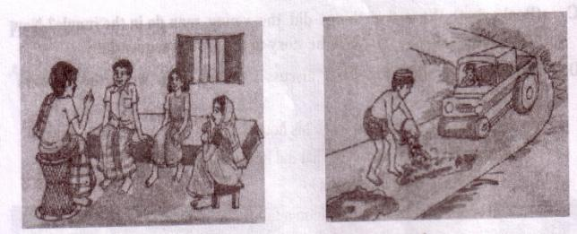

Unit One
Good citizens
Learning outcomes
After we have studied the unit, we will be able to
-
narrate incidents.
-
participate in discussions,
-
listen and understand others.
-
describe something in writing.
Lesson 1: Can you live alone?
A . Look at the pictures and discuss in pairs the following questions.
1. Can you live alone in a house?
2. Make a list of the problems you think you will have if you live alone in a house, e.g. having accidents, cooking, etc.
B . Read the story and answer the questions that follow
Long ago, a young man who lived in a village ,found his life full of problems and sufferings. Quarrels, ill-feelings, jealously, enmity - all were part of everyday life there.
So he left his house and went to a jungle to live by himself. There he made a nice little hut with wood , bamboo and reeds. "Ah, how happy I am here!" said the man to himself.
But one day he found some mice in his hut. The little creatures soon made holes in his blanket. So he brought a cat to kill the mice. The cat needed milk. So he brought a cow. The cow needed grass and hay. So he brought a cowboy.
The cowboy needed food. So he took a wife to cook meals. Then children were born to them, and the man found himself again in a family.
So nobody can live alone, unless that person is either angles or devils. People need food, shelter, companions and cooperation. They need to help each other. And if they live in a family or community, their need can be fulfilled. Hence living in society can make people good and happy citizens.
C . Close your book and answer the question. What five things did the young man do in the jungle? Now divide into groups of five. Tell the story to the groups sequentially.
D . Answer these following questions. First discuss in pairs, then write the answers individually.
1. Why did the young man leave his house?
2. Where did he make a hut? What did he make the hut with?
3. Was the man happy in his hut?
4. How did he find himself again in a family?
5. Where and how can a person be happy?
6. What is the moral of the story?
E . Look at the pictures (a---j). Read the following texts (1---10). Match the pictures with the texts. Write the numbers of the texts next to a, b, c, etc. The first one is done for you.
|
A…6…………… |
b…………… |
|
c…………… |
d…………… |
-

|
e…………… |
f…………… |
|
g…………… |
h…………… |
|
i…………… |
j…………… |
1. As people live in a community or society, they often have problems. A family may have a problem with a particular member (a son / daughter) who keeps bad company. So, they discuss to solve the problem.
2. To prevent theft or robberies, constant security measures are often necessary within the village / city area.
3. A community may have a problem like they don't have a primary school in the village or locality. So the people need to discuss the issue in a meeting and find out how to set up a school for their children.
4. Cooking should not be exclusively a woman's job.
5. Young learners must cultivate virtues and acquire knowledge and skills to prepare themselves to carry out their roles as good citizens. So they need to study formally in the institutions.
6. To establish peace and harmony among the people in a locality / village, often experienced, elderly people mediate between quarreling people.
7. Only studying at school is not enough for the young learners. They must also acquire knowledge and skills at home as well as from media, clubs, sports, libraries and so on.
8. People in a society / locality, often need to buy things at home. So there are vendors selling necessary things.
9. In a village or locality, roads often need repairing for easy movement of people and transport.
10 . Along with acquiring knowledge and skills, the youths must cultivate good qualities like having genuine sympathy for the weak and the poor. They should help the needy, show respect to others and have a strong sense of dignity of work.
F . Discuss in pairs and write the answer to the following question:
What can we do at home and in the locality to become good citizens?
Lesson 2: Knowledge, skills and attitudes
A . Discuss in groups the possible answers to the following question. Then read the text in B and answer the questions.
What else do you need in addition to food, shelter and company to become a good citizen?
B . Read the text.
To be a good citizen, you have to prepare yourself to do good work in society. Well, then how can you prepare yourself?
First, you need knowledge. Today's society is knowledge-based. Without having modern sciences, technologies including ICT and other necessary subjects, you will have difficulty living a good life.
The other areas you, as a good citizen, should have knowledge about are:
-
our country, its constitution, geography and people
-
our state, its executive and legislative powers
-
our judicial system
-
our government and its structures and functions
-
our history, cultures, traditions, literature, moral values and religions
-
our socio-economic activities and educational system
Second, you need skills to do things. Knowledge is not enough. You must be able to apply your knowledge to do things practically.
Finally, knowing and doing things will bring about a change in your behaviour towards others. This behavioral change will show your attitudes towards others, that is, it will show how you think and feel about a person or thing.
Let's take an example. Suppose you, as a student, need to know about `group work' in the classroom. So you ask yourself or your teacher or anybody, "What is group work?" Or you may find about it in a book. In this way, you can know, or you may have the knowledge, about group work: To do group work. the class has to be divided into groups. Each group is to do some tasks given by the teacher or in the textbook. The group members will discuss and share ideas and points, and finally one member will write the answer. All this is knowledge about group work.
Then you start working in groups. In each group you take turns discussing points, answering questions, etc. In this way you actually do the task. Your teacher may monitor and help you to do the work.
Lastly, through regular group work it is expected that there will be noticeable changes in your behaviour. Possible changes are:
-
You will develop the attitude of freely mixing and talking with your classmates and teacher.
-
Your shyness will gradually disappear.
-
You will develop the attitude of helping and cooperating with each other.
-
You will learn to behave in a democratic way.
Most importantly, these behavioral changes taking place in you inside the classroom will be carried over outside the classroom, in real-life situations.
C. Suppose you have learned at school how to make your drinking water safe & when and how much you should drink it in a day. Now write what changes the knowledge and skills from this lesson can bring about in your behavior.
D. Read the text below. Then discuss with your partner and write K (if the text is knowledge based) or S (if the text is skill based) or A (if the text refers to attitude) against each text.
1. Abraham Lincoln, a former president of the United States, advocates a “Government of the people, by the people, and for the people” This means that the people have the right to control their government.
2. Two students are making a kite with colored paper, sticks, glue and string.
3. Tisha's room was always messy. She could not find things easily. Recently she has visited her cousin Ritu in Chittagong. She saw that Ritu's room was very neat and tidy. Everything was exactly in its place. Ritu could instantly finds what she wants. After getting back home, Tisha spent a whole weekend making her room well organized.
4. "It is the duty of every citizen to observe the constitution and laws to maintain discipline, to perform public duties and to protect public properties." (The Constitution of The People's Republic of Bangladesh)
5. Students in pairs are acting out a dialogue in a class.
6. Mouli is back from school. She is very hungry and looks exhausted. "What's wrong, Mouli?" asks her mother anxiously. "Don't worry, Mom. I'm OK. I just didn't have my tiffine today." "But why?" "Our peon died this morning. With other students I gave my tiffin money to the widow."
7. The students of physical education class are practicing stretching exercise in the school yard.
8. The affairs of Dhaka city were run by the Dhaka Municipality until 1978, when the city came under the Dhaka City Corporation.
E . Discuss in groups. Write how K S A can be shown in the following topics:
|
Orsaline |
Debate |
|
Lesson 3: Good character
A . Ask and answer these questions in pairs.
1. What do you understand by character?
2. What does a person with a good character usually do to others?
B . Listen to the teacher / CD and answer the following questions.
|
Listening text 1 |
Questions: Tick the best answer.
1. Which is the correct statement according to the information in the listening it text?
a. Good character does not mean special qualities.
b. Good citizens must have good character with other things.
c. Character means a tool to curve wood.
d. Character traits are distinctive marks always seen on a person's face.
2 . The red crest of a rooster
a. is a symbol of power and strength.
b. enables it to crow in the morning.
c. makes the bird tall and beautiful.
d. shows how it is different from a hen.
3 . The expression `distinctive qualities' means those qualities of a person, which
a. are the same as others.
b. emphasis honesty in him/ her.
c. make him / her different from others.
d. he / she gets from their parents.
4 . Character traits are
a. naturally gifted.
b. personally learned.
c. God given.
d. physically visible.
C . Fill in the blanks in the following passage with appropriate words from the box.
|
harmonious |
allow |
behaviour |
respect |
good |
doing |
family class |
sense |
|
qualities |
believe |
personally |
others |
Citizens having good character live a life of virtue. They may belong to any social 1) [dash], upper or lower. Their thoughts and 2) [dash] show high moral values. That is, they have a strong 3) [dash] of right and wrong .So what they do is 4) [dash] for themselves as well as for others in the 5) [dash] and in the society. In fact, they cannot even think of 6) [dash] any wrong to others. One of the most positive 7) [dash] of these people is tolerance towards 8) [dash]. Suppose a group of people in your community 9) [dash] or practice in something which you do not like 10) [dash]. But as a good citizen you should 11) [dash] them to
perform their activities. Thus tolerance can generate 12) [dash] for people of other cultures. Tolerance and respect together can make life 13) [dash] and peaceful in society.
D . Read the completed passage and tick the best answer.
1 . People with moral values
a. can do anything they like.
b. belong to upper social class.
c. do good only for themselves.
d. cannot do anything wrong to others.
2 . ‘Tolerance’ means
a. allowing others to say and do as they like.
b. a quality of Buddhists.
c. having disagreements with others.
d. a quality that every citizen has.
3 . What can make life harmonious in society?
a. performing religious rites
b. encouraging cultural values
c. respecting others' beliefs and opinions
d. fulfilling religious obligations
E . Find the opposites of these words. If you do not know any, look it up in your dictionary. Then make a meaningful sentence with each of these opposites:
right --- wrong
If you have moral values, you cannot do any wrong to your fellow beings.
tolerance ---------------------------------------------------------------------------------
respect ---------------------------------------------------------------------------------
allow ---------------------------------------------------------------------------------
enjoyable ---------------------------------------------------------------------------------
F . Write a paragraph about how tolerant or intolerant you are towards your classmates. Give examples.
Lesson 4: Responsibilities
A . Read the situation.
Rony's mother gave him 50 taka to buy salt and chilies. On his way to the market, Rony found a poor passer-by trying to hold a boy up, who was lying on the road, groaning. Coming near, Rony saw that it was his classmate Tanim, who was hit by a speeding motorbike. Immediately he called a baby taxi and took Tanim to a clinic. From there he phoned Tanim's parents. When they came to the clinic, Rony returned home without salt and chilies. He paid the money to the taxi driver.
Now discuss in groups the following questions.
1. Did Rony do right or wrong? Why ?
2. What do you think his mother will do when Rony comes back home without salt and chilies?
3. What Rony should have done in the situation?
4. What do you mean by responsibility?
B . Read the text and answer the following question:
What is responsibility?
A responsibility is a duty or an obligation TO DO something. For example, you have the responsibility to take care of your parents in their old age, to attend school and pursue your studies properly and so on. You have also the responsibility to society and the government, e.g. to help a neighbor in trouble or to cast your vote if you are 18 or over.
A responsibility is also an obligation or a duty NOT TO DO something. For example, you have the responsibility not to steal a book from a public library or not to put your building materials on the footpath. These are your responsibilities as citizens. But there are responsibilities of the government as well. Our government has the responsibilities to provide for its citizens "the basic necessities of life, including food, clothing, shelter, education and medical care". The government also has the responsibilities to protect the fundamental rights of its citizens to freedom of speech and expression, freedom of the press, freedom of religion, equality of all before law, etc.
The knowledge, skills and attitudes you have gained at home, at school and in society will help you to accept your responsibilities and to carry them out effectively. Remember, discharging your responsibilities will be good for you, good for your family and friends, and good for your society and country as a whole.
|
Notes 1. The constitution of the People's Republic of Bangladesh, Part II. 2. Pan III, ibid. (Ibid: abbreviation from Latin ibidem which means in the same book or piece of writing as the one that has just been mentioned above.) |
C . Discuss in groups and write answers to these questions.
1. Which persons and institutions do you have responsibilities for? Make a list. The first one is done for you.
a. parents
b . ---------------
c . ---------------
2. Make a list of responsibilities you have as a students at home, school, and in society.
3. Make another list of things you shouldn't do at home, school, and in society.
4. Who do you get help from to discharge the responsibilities you have listed in C1 ? How do they help you?
5. Are there any difficulties in fulfilling the responsibilities? Briefly describe them.
6. Make a list of responsibilities other people have towards you. Briefly describe what might happen if they fail to fulfill the responsibilities.
7. (a) What rewards are you likely to get if you fulfill your responsibilities?
(b) What penalties or punishments may you get, if you do not carry out your responsibilities?
8. What responsibilities do you think you can perform well when you go on a class picnic or when your school stages a play as part of its annual prize-giving ceremony?
D . Look at the picture. Work in pairs.
Suppose this road is near your school. As students of this school, what responsibilities do you think you have to get rid of this nuisance? Make a list on how you will discharge the responsibilities?